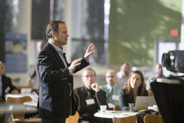

Giving presentations in Business English

This guide will not attempt to repeat the content of guides to
speaking skills in general (for which there are links at the end)
but will focus on the purposes for giving spoken presentations in a
business setting and the associated language that needs to be
mastered.
A further omission from this guide is the kind of speaking skills
that Business English learners will need when interacting with their peers,
colleagues, customers and contacts informally,
as those do not differ substantially from generalised speaking skills covered
elsewhere on ELT Concourse.
Purposes |
Essentially, there are four purposes for a presentation in a business context:
- To report: setting out what happened, what was done and what was discovered
- To explain or train: to help others acquire skills and information
- To propose: to suggest ways forward
- To sell: to set out advantages and persuade
and, although there are obvious commonalities, they require
different language, different skills and different text structures.
This is because the way each is structured and the language one
needs to use to make a case are different in each instance. This
is true whether a presentation is made in writing or in spoken
English. Because presentations are not off-the-cuff informal
events, the audience will expect a certain type of staging of the
information and, if the presentation does not follow conventional
staging, may become disoriented and irritated.
In other words, we need to look at the genre and the generic
structure which is conventional in an English-speaking setting.
We'll take them one at a time. In what follows, the focus is on the following five language categories:
- Participants
These can be human or non-human and the reference here is to the kind of entity which forms the theme of the language in the presentation. For example, if we begin with:
We have noted the need for ...
then the theme is what the presenter and team have noted but if the beginning is:
The process is as follows
then the theme is the process, not the people.
It is important that people are aware of which participants in the presentation they need to emphasise by placing them in the theme position. - Verbal processes
There are three of these which we can divide like this:- doing verbs:
- material
This machine can process ... - behavioural
Your customers demand ...
- material
- thinking, feeling and saying verbs:
- mental
We believe that ... - verbal
People have reported that ...
- mental
- being verbs:
- existential
There is an issue with production times - relational
The process is inefficient and time consuming
- existential
- doing verbs:
- Modality
The three areas which concern us here are- epistemic modality which is to do with what is possible
or likely
The process may take some time - deontic modality which is to do with what is obligatory
or recommended
The process should be made simpler - dynamic modality to do with willingness and ability
We will be able to supply the product with days
- epistemic modality which is to do with what is possible
or likely
- Circumstances and adverbials
This refers mostly to adjuncts such as adverbs and prepositional phrases such as:
crucially
noticeably
in practice
on the shop floor - Connections
This refers to coordination, subordination and also to conjuncts which perform similar connective functions such as:
so that
because
As a result, ...
 |
Information reports |
The structure of an information report is the simplest of all
which is why we are starting here and why it is also a good idea to
start the training of presentation giving with this form. An
information report needs, above all, to be properly organised.
Data which are presented out of order or in unconnected sections are
more difficult to access and assimilate and that frustrates both the
listener and the purpose of the exercise.
The
structure looks like this:
This is the structure that good presenters use at the planning stage. If a lot of information has to be communicated the presentation needs to have some backup in terms of handouts, diagrams and texts for people to take away. Reference should be made to this material as the presentation unfolds, not left till the end.
| Stage | Participants | Verbal processes | Modality | Circumstances and adverbials | Connections |
| General statement | What is the report topic? Who requested the report? Why? Who constructed the report? |
Existential and relative processes Passive voice Present and past simple tenses |
Epistemic and dynamic | Matter Focusing adjuncts Angle and viewpoint |
Subordinators: causal purpose comparison conditional |
| Examples | This report
concerns ... The report was requested by ... The purposes of the report is ... There is an issue with ... It is clear that ... The issue which was identified is ... The report was written by ... |
We wanted to find out if we
could ... It was necessary to see whether it would be possible to ... We set out to discover whether ... probably possible etc. |
about concerning primarily chiefly according to the data in the opinion of ... in our view |
because as a result in order to so that whereas while if whether unless |
|
| Information | Data gatherers Figures Actors |
behavioural material verbal |
Little modal auxiliary verb use but some adverbial use | extent location (place) location (time) manner and means |
Coordinators: addition adversative alternative |
| Examples | We asked ... We investigated The figures for this area are ... The process is ... Customers have said that ... |
obviously certainly probably etc. |
for three days in all areas on the factory floor in the working week after a delay of by telephoning via the website by asking |
and additionally moreover but however although or alternatively otherwise |
|
| Summary | Reporters Data Results |
mental existential |
Deontic | manner and means | Summative conjuncts |
| Examples | We conclude We suggest The conclusion is ... |
The company should consider ... It will be useful to ... There is a need for ... |
by streamlining with greater focus on taking into account |
So, ... Consequently, ... In conclusion, ... To sum up ... |
|
 |
Explanations |
Explanations have a similar structure to Information Reports but
the language that is required to give them is quite different, as we
shall see. The aim of a presentation which attempts to explain
something is to enhance the skills and knowledge of the audience.
This may be overt training or it may simply be part of an ongoing
consideration of how the organisation accomplishes certain tasks.
The overall structure looks like this (usually):

Again, the ordering of explanation texts is critical. It is much easier for people to follow if the stages come in a logical order without back shifting with expressions such as but before that, after we have etc.
| Stage | Participants | Verbal processes | Modality | Circumstances and adverbials | Connections |
| Identification of the topic | What is the process? What will be the outcome? |
Material Passive voice Present tenses |
Dynamic | Matter Focusing adjuncts |
Subordinators: purpose |
| Examples | This is how ... This is what happens when ... This is the process by which ... This will help you to ... This will make sure that ... |
You will be able to ... It allows us to ... This should permit ... |
concerning primarily chiefly centrally |
so that in order to to |
|
| Explanation sequence | Employees Material |
Passive voice: behavioural material mental |
Little modal use The focus is on process. |
location (place) location (time) manner and means |
Conjunct sequencers Subordinators: purpose result |
| Examples | The materials are
received The process begins The analysis is made The orders are processed The team ensures The staff record etc. |
on the factory floor in the warehouse as soon as possible by filtering out through the production line |
firstly, secondly etc. then next subsequently afterwards thereafter |
||
| Summary | Process stages | existential | Deontic | focusing and intensifying adjuncts | Summative conjuncts |
| Examples | The most important
things to get right are ... The essential steps are |
It is essential to ... We must ... It is necessary to ... |
critically importantly essentially in essence |
In brief, So, ... Consequently, ... At the end |
|
 |
Proposals |
Proposals closely resemble discussion texts insofar as they seek
to set out the current position and weigh alternative responses to
it to gain some overall benefit. They are not one-sided
expositions because the attempt is to make the proposal appear
reasonable and show that any drawbacks have also been considered.
The overall structure looks like this:

This has a rather different structure and there is a need to master a different set of language exponents of the functions because a proposal has to sound both rational and persuasive.
| Stage | Participants | Verbal processes and tenses | Modality | Circumstances and adverbials | Connections |
| Identification of the issue | What are we trying
to do? Why is this important? |
Mental Behavioural |
Deontic | Manner Contingency |
Coordination: additive Subordination: resultative |
| Examples | Many consider the
problem is ... We seek to address the issue of ... The importance lies in ... |
We need to find a way to ... It is important to ... The importance of this is ... The situation ought to be improved |
by ... unless if not lest for fear of |
and additionally as a result consequently |
|
| Explanation of the issues | Processes Non-human themes |
material | Dynamic | time manner and means |
Subordinators: resultative contrastive conjuncts |
| Examples | The materials are
inadequate The process fails The analysis is flawed Orders are lost |
We cannot ... It is impossible to ... We are unable to ... There is no ability to ... |
within the time scale by before the deadline with a delay without losing sight of |
because so whereas On the other hand By contrast |
|
| Proposal | Proposers | mental verbal |
Deontic | emphasising adjuncts | Subordinators: resultative |
| Examples | We believe that ... We are suggesting that we ... We feel strongly that ... |
The future should ... We have a clear need to ... There is an opportunity to ... |
clearly obviously certainly without doubt |
so that in order to to to ensure which will ensure |
|
| Summary | Process stages | existential | Deontic | focusing and intensifying adjuncts | Summative conjuncts |
| Examples | The most important
things to get right are ... The essential steps are ... |
It is essential to ... We must ... It is necessary to ... |
critically importantly essentially in essence |
In brief, To sum up the main points Most importantly |
|
 |
Selling |
Sales pitches are not discussions. The purpose of the pitch
is not to consider two sides of an issue or to set out alternatives.
The purpose is to persuade and support the persuasion with evidence.
The presentation should, therefore, focus only on the perceived
benefits with no consideration of drawbacks.
The structure, therefore, is:

This is an exposition so will contain a good deal more in the way of verbal and mental processes along with quite a lot of modality.
| Stage | Participants | Verbal processes | Modality | Circumstances and adverbials | Connections |
| Statement of position | What we are offering. | Material Present and perfect tenses |
Dynamic | Matter Focusing adjuncts |
Subordinators: purpose |
| Examples | We have developed
... We produce ... We can now offer ... |
This will help you to ... This enables ... With this you can ... |
concerning primarily chiefly centrally |
so that in order to to |
|
| Preview of benefits | Non-human and human themes | behavioural material mental future forms |
Deontic and dynamic | role contingency extent cause |
Conjunct sequencers Subordinators: purpose result |
| Examples | The materials will We believe that ... We know that ... You will expect that ... We can guarantee that this will ... etc. |
We all need to be able to ... There is a clear need for ... There must be a better way You should be able to ... |
as an example if say supposing frequently routinely |
firstly, secondly etc. thereafter so that in order to |
|
| Arguments and evidence | The product The seller The customer |
behavioural material mental future forms |
Dynamic | time contingency manner and means |
Sequencing and additive conjuncts resultative conjuncts and subordination |
| Examples | This machine
processes ... We are convinced that ... You will see that ... |
This allows ... You will be able to ... The savings can be ... |
whenever if by with |
Firstly etc. Additionally Moreover As a result so that to |
|
| Reinforcement and summary | The product | existential | Dynamic | focusing and intensifying adjuncts | Summative conjuncts |
| Examples | The most important
advantages are ... The difference will be that ... |
This allows you to ... With this you can ... Now, you can see ... |
critically importantly essentially in essence |
In brief, So, ... Consequently, ... |
|
Commonalities |
Although the differences in the kinds of language that need to be mastered are, as you can see, quite marked, there are also commonalities. These are:
- All presentations begin with a statement of the topic to orient the listeners and to set the context. Without this, a presentation can fail before it begins.
- Logical staging is essential to maintain coherence: switching stages around or mixing them up will result in incoherence.
- Most presentations will end with a summary and/or some kind of coda to signal the end.
- Most presentations will allow time for and invite questions from the audience.
- Many presentations will be followed by a general discussion in which turn-taking skills will be at a premium. See the link below for a guide to more on that.
 |
Questions and clarification |
The final section of all four presentation types exemplified
above concerns the need to have space at the end for questions and
clarification.
Because this is common to all types of presentation, it makes sense
to handle how to conduct this part of the presentation in a separate
teaching section.
How you conduct the process depends to a large extent on who is
asking the question. Superiors have the right simply to ask
and to override any constraints that the speaker may try to put in
place. Colleagues and subordinates may need to be invited to
ask and are more amenable to constraint.
The role of the presenter in this part of the process is as the chair of a meeting. The presenter needs to be able to:
- apply topic constraints
- In a presentation, a speaker may not have the luxury of
selecting questioners because some participants may be in more
powerful positions or simply happy to ask uninvited.
In this case the speaker needs to rely on topic constraint alone but the constraint can often be signalled explicitly, by the parts underlined in the following examples:
Does anyone have a question about these figures?
Bearing this in mind, does anyone have a question?
Does anyone need to ask anything about the results so far before we go on? - nominate
- It is often the case that colleagues are in the audience and
they may need to be involved in this stage of the presentation.
The speaker is in a strong position to constrain who contributes
and who asks questions. It is quite simple to do this:
John, do you have anything to add?
Can Mary explain that, please?
and so on. - decide on open endedness
- A presenter need not try to constrain by topic at all but
runs the risk of people going off topic and following tangents.
For example, all the following are open invitations to tangential questions:
Is there anything at all anyone wants to ask?
Any questions about anything? - re-focus
- If open-ended invitation has, in fact, resulted in off-topic
contributions and questions, the presenter needs a strategy or
two to drag people back on task. This can usually be
achieved easily if the contributor is a colleague or subordinate
but may be unwise if the off-topic contribution comes from a
superior. Ways of doing it include:
That's an interesting point but not one that I can deal with here and now.
Good question. Perhaps we should talk about that later.
Can I leave that until after the meeting?
What type of question am I being asked? |
An important skill for a presenter is to recognise the kind of question that is being asked. People have a range of ways of asking and answers will only be appropriate if the speaker has recognised what the focus is. There are three main sorts
- Checking one's own comprehension.
Questions such as:
Am I right in thinking ...?
Would I be wrong if I assumed ...?
Should I assume that ...
etc.
are all ways to check that one has understood accurately.
The response needs either to be affirmative (and can be short) or refocusing when the questioner is mistaken. Usually, something like:
Yes, that's exactly the point
or
Not quite. The point I was making is (+ repetition) - Requesting repetition or reformulation.
Questions such as:
Could you go over that point again?
Could you explain again what ...?
Could you say that again?
Is that the same as saying ...?
etc.
ask for repetition and are requests, not questions so they need to be responded to differently.
This means that presenters need to be able to rephrase what they have said in simpler (or simply different) ways. - Challenging.
Questions such as:
Is that always the case?
Are we to believe that ...?
How reliable are the data?
What evidence do we have that ...?
etc.
are all ways of challenging the speaker to justify comments made.
This will mean that a speaker must be prepared to justify statements and that, of course, is something to focus on at the planning stage.
Many find that imagining a critic on your shoulder asking this sort of question while the presentation is in the planning stage helpful.
 |
Pressures |
There are a number of pressures on anyone speaking in public. In the classroom, we can reduce them somewhat.
- Preparation level
Off-the-cuff presentations are not for most people. Learners operating in a foreign language are even less able to present impromptu and it isn't fair to ask them to do so.
It is important, therefore to build in preparation time to any teaching programme aimed at presentation techniques.
Being well prepared and knowing that you are, reduces the pressure considerably. - Topic familiarity
Trying simultaneously to research a new topic and prepare a presentation on it is an unnecessary pressure in the classroom so care should be taken, especially at the beginning, to allow the learner to decide on the topic and type of presentation they want to plan. That way, they can focus on the presentation not the data because the latter are well known to them. - Audience size
Pressure increases in direct ratio to audience size so one way to reduce the pressure is to get people to practise their presentations in small groups of three or four before they have to take the step up to presenting to the whole group. Repeating a presentation may seem somewhat dull to us but it is not seen that way by learners who appreciate the opportunity to repeat a presentation more than once. - Using visual aids
Visual aids can be extremely helpful or just an irritation depending on how well they are designed. There are two issues:- They act as an irritation when they are used instead of explanation and description; they are helpful when they are used to supplement explanation and description to present data which cannot (or should not) simply be read out. We have probably all attended a presentation in which the speaker projects a slogan and then reads it to us. That's a waste of everyone's time.
- They have a further useful function when used well and that is to replace the speaker's notes. If, for example, slides are projected which refer to key data and ideas, they will serve to remind the speaker of what should be emphasised. If they are used indiscriminately, they simply overwhelm the audience with detail and people lose the thread. A rough rule of thumb is not to use more than one slide per five minutes of the presentation.
- Language unfamiliarity
- The first area of language which needs to be tackled
before most people can even begin a presentation is that of
verbalising graphical data.
Practising the skill of looking at, say, a graph such as:

and being able to say something like
As can be seen, Series 3 remained around 2.0 for the first two Categories but increased by 50% in the third Category and had more than doubled by Category 4.
is valuable practice for anyone aiming to be able to present data verbally. We need to do more than show the data, we need to be able to explain them. - Secondly, learners need to master a range of
prefabricated language to increase their fluency.
Examples are:
- To gather one's thoughts when questioned:
Well, let me see
Thank you for the question. It's an important one
Hmm, that's an interesting question
Well, now, what I can say is ... - To present a personal opinion (a coda, usually):
as far as I'm concerned
to my mind
in my view
as far as I can see
it seems to me that - To orientate the audience:
Now we can move on to the second issue
To summarise ...
The essential point is ...
Finally, ...
Another way of saying this is ...
An example of what I mean is ... - To invite questions:
I am happy to try to answer any questions you may have
Does anyone have a question they'd like to ask? - To deal with interruption:
I'll come to that at the end, if I may
I'll take that point later.
That's an interesting point but we don't have time for a full discussion now.
- To gather one's thoughts when questioned:
- The first area of language which needs to be tackled
before most people can even begin a presentation is that of
verbalising graphical data.
 |
Visualising a presentation |
A useful technique for (not only) Business English learners asked to give a presentation is to get them to visualise it before they deliver it. It has advantages:
- It makes them less reliant on their notes, helping them to be more mobile and maintain eye contact with the audience
- It increases their confidence because they will feel better prepared
- It lets them see where they may need more content (or fewer PowerPoint slides)
- It allows them to predict what people may ask and prepare some kind of answer
It works like this:
Step 1: learn the presentation
Learners should sit with their plan for the presentation and make sure they can, without looking at it, recite the essential stages of the talk. Depending on the genre (see above), this will require three or four stages to be recited.
Step 2: run through the stages
This is where the use of visual aids such as projected slides is most helpful. As was noted above, slides and other graphics can replace the speaker's notes altogether if they are confined to the key ideas in the talk.
Once the staging is clear and memorised, learners need to focus on
- what they will say at the beginning of the presentation
- what they will say when displaying any data graphically (see above under language familiarity)
- what they will say at the beginning of each stage
- how they will signal transitions between stages
- how they will signal the end and invite questions and comments
Step 3: reduce the notes
Learners can now re-visit their notes and reduce them to key words on cards. If this procedure has been followed to the end, they may not need the cards, but most people like some reassurance.
Step 4: visualise the whole presentation
The learners should now find somewhere comfortable to sit or lie and, with their eyes closed, visualise the whole presentation from start to finish. In particular focusing on getting the order and staging right and going over in their minds the short language chunks they need to memorise to help them speak fluently
Step 5: questions
The final stage, before repeating Step 4 as often as necessary, is to try to imagine what questions people are likely to ask and how they will field them.
 |
Delivering the presentation |
There are a few logistical matters to attend to, not least:
- Setting up the room appropriately so the presenter is comfortable with the arrangement.
- Making sure the equipment is functioning as it should and knowing what to do if it doesn't.
- Making sure everyone shows respect by turning up on time and being quiet and attentive. It'll be their turn soon.
- Allowing for overrunning. Novice presenters, in any language, are often poor at knowing how long something will take. It's disturbing and can even be distressing to be hurried along or cut short.
- Having a question or two in mind yourself to get the ball rolling at the end of the presentation.
- Making sure the topic of the presentation is known to everyone in the group. This simulates what will happen when they attend lectures or lessons for real.
- During and before any student-led presentation, we should not forego the opportunity for the other learners to practise their note-making skills and their questioning strategies.
 |
Other speaking skills |
That is obviously not the end of the range of speaking skills
that learners will need when using English in a business
environment.
However, most other speaking skills
do not lie specifically in the realm of Business English. They include:
- Cooperating in peer groups to get tasks done
- starting tasks
- planning
- setting aims
- agreeing
- suggesting
- negotiating
- objecting
- encouraging
- volunteering
- Interacting with superiors
- getting permission
- getting help
- explaining
- reporting
- getting information
- complaining
- arranging
- apologising
- Socialising with colleagues, customers, suppliers and other
contacts
This is often an underestimated need which learners recognise as important but on which teachers less often focus. - Functioning in an English-speaking society
This is relevant to learners who may have to spend some time away from their own culture.
and all these skills will form just as much a part of a General English programme as they will form part of a Business English course.
| Related guides | |
| turn-taking | the general guide to the area |
| expressing cause and effect | a separate guide to the functional area |
| speaking | the more general guide to the skill |
| teaching speaking | for some classroom ideas |
| visualisation | as a teaching technique |
| the A - Z index | from where you can track down other guides to verbal processes, modality types and so on |